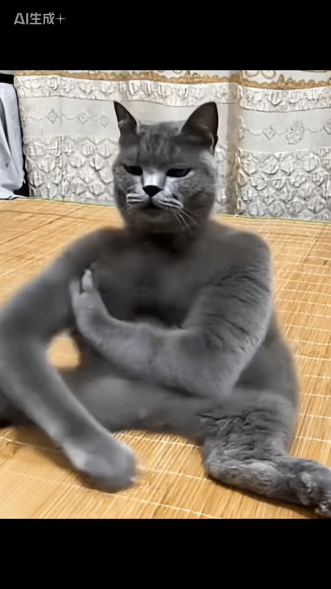
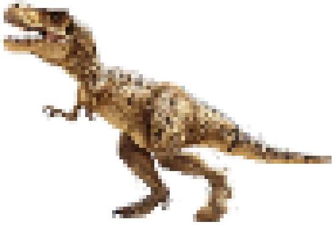

Train-PWA
Vibecoded Projekt udelany pro me na posilani notifikaci, zda-li muj vlak ma zpozdeni. Je to PWA (Progressive Web App), abych nemusel platii poplatek na apple store. Je to hradcoded ciste na muj spoj

Akce predbiha lenost
Jsem student informacnich technologii, rad sportuji, lezu, jezdim na kole a jsem zaujaty do sveta AI. rad hraji pocitacove hry mainly singleplayer hry
Vibecoded Projekt udelany pro me na posilani notifikaci, zda-li muj vlak ma zpozdeni. Je to PWA (Progressive Web App), abych nemusel platii poplatek na apple store. Je to hradcoded ciste na muj spoj
Muj finalni projekt v Druhaku. Je to Java Window Aplikace, spociva na podobne bazi jako cookie clicker, ale misto susenky tma je gif ktery se kazdym klikem zmeni

Vibecoded Projekt pred tim nez to bylo cool, delano pres clauda, a je to skakaci hra s dinosuarem delana v godotu

| Dovednost | Úroveň | Kod |
|---|---|---|
| Programovani | Java/C# | Pokrocili/Zacatecnik |
| Jazyk | Anglictina | B2 certifikat |
E-mail: kordikton@gmail.com